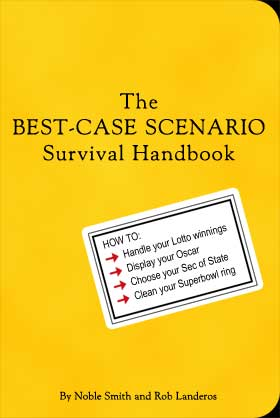

|
 
- - - - - - - - - -
Best-Case Scenarios
Good shit happens too, and when it does, it's important that you be prepared.
- - - - - - - - - -
By Noble Smith
The popular best-seller, Worst-Case Scenarios Handbook, offers practical advise for just about every conceivable bad situation. Sure, shit happens, and it happens a lot, but that's a very pessimistic outlook, isn't it? Good things happen too. Just because they don't happen too often doesn't mean you shouldn't be prepared to handle all your good fortune.
Skreed is proud to offer the first three installments of Best-Case Scenarios - our own manual on how to deal with good luck and success.
You are stranded on a Desert Island with Tom Cruise or Julia Roberts
Spend the first morning scavenging the beach for much needed supplies. This is your chance to show off all of the subsistence techniques that you learned from Survivor. With a little elbow grease a splintered airplane wing will make a nice wall for your lean-to. Your movie star will spend much of their time here, out of the harmful rays of the sun. And remember: Don't make your camp in a dry riverbed. It rains hard in the tropics, as you well know from Survivor Outback.
Have patience with your movie star. They are cut off from all creature comforts. You aren't just their biggest fan anymore. You're their assistant, agent, psychoanalyst, yoga instructor, personal chef, producer and director all rolled into one. Treat them with kid gloves and kindness. They're like royalty--their nerves are tender. They're used to sleeping in four star hotels and flying first class and having other people clip their toenails. You might be frustrated with them in the beginning. Have patience. Carve a cell phone for them from driftwood and let them "call home." This will make them feel much better.
Make a big show of trying to find a way off the island. Start a signal fire and send smoke signals. Don't worry. Nobody is going to find you. Take comfort in the fact that they will eventually turn to you for succor. Because hey, you're better than hugging a sack full of coconuts.
For your star's birthday, give them a wonderful present. Make sunscreen from coconut rind, tree sap and fish oil and put it in a film canister (or another container found in the flotsam and jetsam). They will begin to worship you--the provider.
If they get a cut, offer to suck out the pus. This will be your prelude to intimacy. Don't miss the chance!
At night, when you're sitting around the campfire, tell them that this will make a great movie when you get back to civilization. Let them weep. You've got all the time in the world.
 Next page | You win the Nobel prize Next page | You win the Nobel prize
1, 2, 3
|